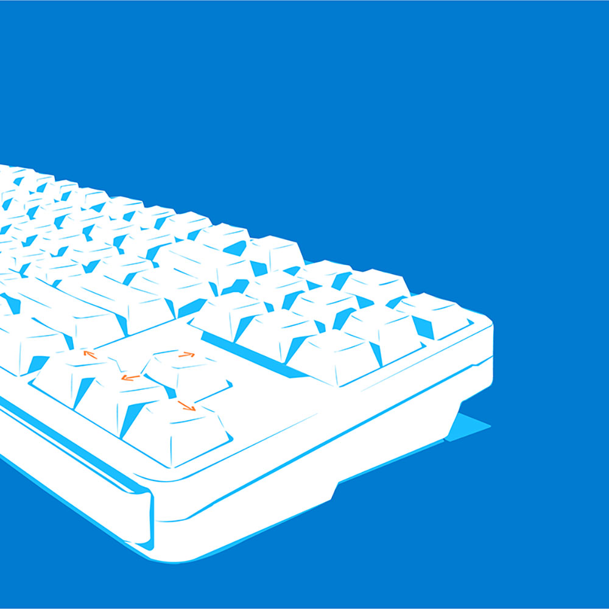
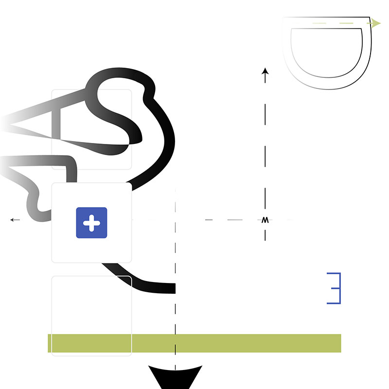
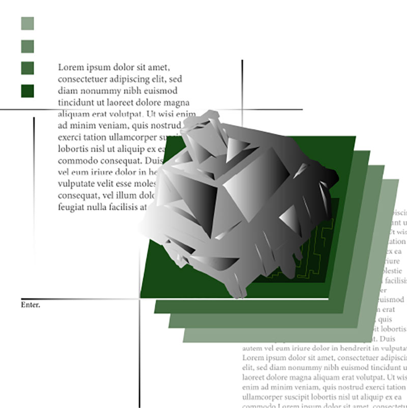
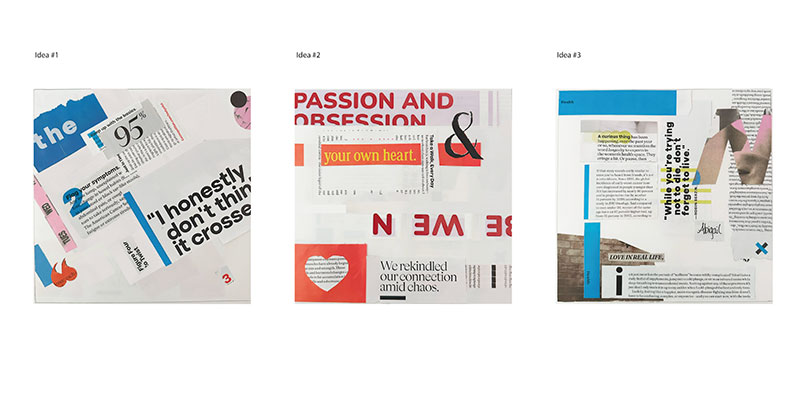

𓄲 𓏼 About Me .⋆♱
Just trying lend my glasses to others, and show how I see world. Do not be afraid to express yourself because that can inspire others one day.
As others have done for me, I hope to encourage growing artists to never stray away from their own creative voice. Use it to connect the world, no matter how small the vector or pixel.
𓄲 𓏼 My Work .⋆♱

Reducted Kiba
A reductive drawing of my beloved keyboard, Kiba.

Abstraction of a Keeb
An abstracted design of a keyboard.

Abstraction of a Mec-Switch
Another abstracted design of a keyboard, focusing on the mechanical switch component.

3 Magazine Cut-comps
An exercise that utilized selected imagery from a traditional paper magazine to form some sort of design.
Contacts
── ── .✦.✦.✦.── ──
Email: kalodescentt@gmail.com